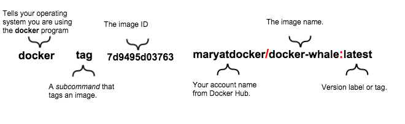
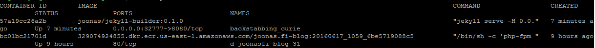

Thoughts on Docker
Now that I’ve been actively messing around with Docker for more than 6 months, and run production software on top of it, it’s a good time to share my findings.
tl;dr: Docker has some disgusting warts, but the sum of positive and negative points is clearly on the positive side. I fucking love Docker for the problems it solves, as I get to focus on the actual problems I’m solving with my software, instead of the mundane shit I’d have to deal with without it (configuring dev, build/testing and production environments + how do I deliver and deploy this to production?).
Some of the points are related to Docker itself, some are related to the culture and habits around it. Of course Docker still being relatively new, we are still converging towards the consensus on best practices.
The good stuff
Dev and production parity
You can get your development and production environments to almost 100 % parity, or at least really close, depending on your development model.
No more “works on my machine”. Usually, if it works somewhere it works everywhere and the other way around - if it doesn’t work somewhere it probably doesn’t work anywhere.
Of course this is a bit of oversimplification, but given sensible infrastructure decisions (and having as much infrastructure as possible also containerized), and applying the exact same infrastructure, or at least as close as possible, to dev and production almost guarantees you this.
Increases host utilization
Containerization increases host utilization (= do more with less servers) because its more efficient than virtual machines, but essentially produce the same isolation.
The isolation is not probably guaranteed in a security sense, but in the sense that one container doesn’t accidentally mess with another container. Malice in VMs vs containers is a different question, but the security improves as the container technology matures.
Encourages to outsource some concerns to infrastructure
Logging: Docker has first-class support for the use case where the application logs to stdout and Docker can be configured to deliver the logs to where ops team wants them to go (for example shipping them to a external log aggregation service is dead easy with progrium/logspout).
No more including huge components in your software just to spew out some log lines (I’m looking at you, log4j with 1.4 MB of source code).
Docker’s philosophy sits so well with the twelve-factor app principles.
There’s also a booming ecosystem around Docker and software-defined networking. Essentially SDN in Docker world means that different containers on different hosts can talk to each other, even if they’re on internal networks (the default). Just look at flannel, Weave or Docker’s native solution (no encryption though). See also this kick-ass comparison.
Immutable images
The idea: build an image. It is immutable - meaning nobody will change it to “test just one thing quickly”. Now test it. If its good, deploy that into production. It is less likely that nothing goes wrong, as its almost guaranteed to run in production exactly the same as it ran during your testing.
This immutability encourages you towards this model:
- build an artifact
- test it
- deploy said artifact
I.e. compile once, and then its just one $ docker run ... away from running anywhere from 1 to thousands of servers.
The immutability also encourages you to write stateless apps, which are super easy to scale. Or if you need state, at least you will design for it, and think in terms of different categories of state:
- caching state => safe to discard
- business state => maybe only keep that state in a service designed for state, i.e. a database?
How do I ship this into production?
Because of the immutable image aspect, and the fact that the image contains everything needed (app, dependencies, even the OS), you just ship that one image (read: single build artifact) into production.
The shipping also is easy, since Docker has a concept of a registry. From your build machine, just transfer it (push) to the registry. And upon deploying to production, that machine will fetch (pull) the image and start a container off of it.
Also, without Docker you have to specially design your software if you want to have multiple instances of the same app to run on the same machine. Docker natively supports running multiple copies of the same image. Though if it needs any static ports exposed you probably want to use a reverse proxy / loadbalancer (f.ex. jwilder/nginx-proxy is fully automated).
That being said, there are issues with the registry implementation (see the heading under “Bad parts”).
Botched deployment (rollback)
Even though roll forward is a much better thing, rolling back a deployment is dead easy. Also, because the image is probably still cached on the server, starting the old version should take only seconds. Also, the immutability helps here: you get exactly what you want with the rollback, since its all-encompassing atomic “restore point”.
You can easily grasp what’s running on a server
In pre-Docker times, when I wanted to decommission a server, I’d have to spend the whole afternoon looking at nearly every corner on the server to discover what crap I had managed to install there during the years - to figure out what I wanted to save.
Now, if you strictly follow the principle that “nothing gets deployed on the server outside of Docker images”, inspecting the server is as easy as $ docker ps --all (all => also list the stopped containers).
Now, when I want to decommission a server, I just ask Docker what’s running and on a case-by-case basis decide whether to:
- just kill & forget that service (if its old and/or unused) OR
- start that same image on another server (which is damn easy with immutable images) and update the DNS to point to the new server.
This brings a peace of mind to me, a person with notoriously bad memory. :)
Now, the whole process of migrating services off an old server to a new server literally takes less than 30 minutes.
Also this ease of migrating from server to server enables immutable infrastructure. E.g. you never have to apply risky operating system or Kernel updates to the machine, as you can so easily just provision a new server with the updated host OS and Kernel and throw the old server into the trash.
Infrastructure as code
Since the Dockerfile forces you to codify how the image gets built, it forces you to document:
- Which operating system + OS version your software uses (= base image)
- Which packages on top of the base image your software requires (e.g.
apt-get install ...)
This is only a good thing. No more there is only the one guy in the team who knows how the app has to be configured to work properly (“tribal knowledge”). New hires can find everything they need to learn how the app works just by looking at the code. The why needs to be in the documentation, though (arguably that also should be in the version control).
Explicit dependencies
Let’s say you want to run two different applications on a server. Scenario:
- App A requires
curl, and has that requirement documented - App B requires also
curl, but does not have that requirement documented
App B accidentally works, because app A is also installed on the same server, which accidentally satisfied the undeclared dependency.
NOTE: these accidental/implicit dependencies are also possible with provisioning tools such as Chef/Puppet/Ansible/whatnot, if you’re not careful (and mistakes do happen).
With Docker, each app has its own sandbox. Sure, your base image (e.g. ubuntu:latest) might have also curl installed by default, but now the stuff app A has in its image does not in any way affect app B. And the stuff app A installs on top of its base image is not visible to app B.
Dependencies in Dockerfile are mostly explicit (implicit dependencies come from base image), but at least implicit dependencies are private, since each container run in its own sandbox and will not let other containers use them! Plus implicit dependencies are noticed in testing when something breaks if you change your base image or its version (e.g. base image no longer supplies curl).
Same visibility / sandboxing also applies to code dependencies. For example with a microservices model, given following components:
- UI service
- User registry
Now let’s say your UI wants to fetch user details, the UI can’t just call some function directly from the user registry to fetch that data (that would be a code dependency between containers, which is not supported). Your user registry has to expose an API so the UI can fetch user data (probably over HTTP). That is an explicitly modeled dependency, and it forces you to design an API for the operation. The API will probably be much more thought-out than a quickly hacked-in function call.
Plus if you ever need to provide that API to consumers, you’re much closer to that goal already.
The bad stuff
Layer clusterfuck
In Dockerfile every minor command produces a new layer, such as:
- Setting an
ENVvariable or - Specifying contact details in
MAINTAINERinstruction)
The more layers you have the slower it is to transport the resulting image. Each unnecessary layer, even empty ones with almost-zero file size, add about a second (due to latency I guess) in both the push and pull phases (= affects both build and deployment).
The argument to the “lets make everything a layer” craziness in the build process is cacheability. That is, builds in best case are super fast because they only have to change very little, if it can efficiently use the preceding cached layers.
But I don’t buy that argument since they could have had separate layer models for building and the result. I find in my most projects wanting the output to be just one layer instead of 10 or more.
There is a horrible hack to minimize the layer count by bundling all your separate RUN commands in a single RUN instruction. This almost defeats the purpose of the cache system.
There are a few “squash” 3rd party tools to help post-process the resulting layers into something more sensible:
- jwilder/docker-squash: written in Go (which is good because you only need the small binary). Doesn’t seem to work anymore, which is a shame. (Docker API change?)
- goldmann/docker-squash. Written in Python. Works but unfortunately requires 200-300 MB’s worth of space when downloading Python & pip packages. And doesn’t have as nice behaviour as jwilder’s tool with
-fromdefaulting toDockerfile’sFROMinstruction (which is what most would want anyway).
This squash command should be part of the Docker core, so I don’t have to download around 300 MB of Python-related crap to my build machine to fix the layer clusterfuck.
Badly documented naming confusion
Example: run Redis (an in-memory database) with Docker:
$ docker run -it redis
The “redis” part is the name of the image. The “image address spec” most Docker commands support is like this:
[registry/] [username/] image [:tag]
Yes, all components except image are optional. And yes, this is largely undocumented. I learned the actual format out of mostly my own research (= stumbling). Even $ docker push --help says only this:
Usage: docker push [OPTIONS] NAME[:TAG]
Neither do the docs online explain the “image address spec”. The closest documentation I’ve found is from a Mac tutorial:

But even that doesn’t explain this fully. I’ll try my best now to try to explain this madness:
When you build an image, all it gets is an id - a hash (just like in version control). We must add it a name and tag for it to make some sense. After all, company/product:v1.2.3 makes more sense than 7912503b1df0, right?
After giving my first image a name, I spent quite some time scratching my head on how do I publish my image to Docker Hub, since I think pushing an image requires me to specify where I want to push my image to (remember, there are other Docker registries than just the official Docker Hub), and under which user account and to which repository I want to publish it to! How am I going to specify those details on push? (note the lacking help on $ docker push --help from before)
It took me a while to realize that the image spec is the actual storage location along with all the necessary details (registry, username, repository and tag). It was so hard to realize because the examples are always so simple ($ docker run -it redis), and the defaults are not clearly documented.
So like I said, most components in the image spec are optional, thus we end up with permutations:
- redis
- redis:latest
- library/redis
- library/redis:latest
- docker.io/library/redis
- docker.io/library/redis:latest
All of the above are actually fully equivalent! Yes, it’s time for a WTF! Stay with me, I’ll explain those soon!
If we’d use some other registry than Docker Hub, then the image spec would look like this:
- docker-registry.other-domain.com/somecompany/redis (= non-default registry)
- docker-registry.other-domain.com/somecompany/redis:latest
Let’s break down the rules:
- When tag (= “version”) is not defined, “latest” is assumed (
redis => redis:latest). - If user is not defined, “library” is assumed (
redis:latest => library/redis:latest) - If registry is not defined, Docker Hub is assumed (
library/redis:latest => docker.io/library/redis:latest). And yes, the official address for Docker Hub is hub.docker.com but the registry itself has a different hostname.
Now that you know this formula, you can “easily” realize that the name/tag combo tells everything needed to push / pull images, even for simple spec like redis, we can deduce the following from it:
- Registry
- Owner of repo
- Repo name
- Tag (version)
Thus, if you read the above rules again, redis expands to docker.io/library/redis:latest.
This scheme is clever, I’ll give them that. But clever is the arch enemy of simple. And for newcomers this is almost hostile, because its not documented in easy-to-understand way. It boggles my mind.
Sidenote: for private registries, all that cuteness in the naming amounts to nothing. This is how one of my image is named:
329074924855.dkr.ecr.us-east-1.amazonaws.com/joonas.fi:20160617_1059_6be5719088c5
Here’s how it looks in the output of $ docker ps command:

Note, how the listing is unreadable, because it is split into two lines. Apparently the text ui (“TUI”) is only designed for open source stuff (not stuff in private registries).
p.s. If you look closely, you’ll notice that my blog runs in a container, of course. :)
Registry implementation
If you don’t need private repos, this is not an issue for you since Docker Hub is free to use for open source stuff.
I somewhat dislike Docker’s Registry implementation because it requires a special server software for the registry. That means additional infrastructure to maintain, unless you pay for Docker Hub, AWS ECR or Google’s, but both ECR and Google won’t work painlessly with just $ docker login, f.ex. with AWS the login command expires in 12 hours and you need their SDK to generate new login tokens. I had to build automation around that. And IIRC Google’s implementation requires a custom client for push/pull commands.
CoreOS’s rkt’s implementation is far superior because it makes do with just static files via HTTP GET (i.e. AWS S3 will do), it has cryptographic trust verification (pgp) and DNS-based discovery.
There’s no layer deduplication across repositories
Got each repository having the same base image? The same base image layers will have to be pushed to the two repositories, even though they are on the same registry.
A simple reference counting mechanism would fix this, i.e. multiple repos using the same layer would be stored only once, and delete on the physical file would only occur when refcount would reach zero. The layers already have cryptographic hashes (sha256), so identifying layers across repos securely would not be an issue.
Docker Hub is somewhat unrealiable / features broken
Some days (to be fair: rarely, but still) pushing to Docker Hub just does not work - I’ll get some cryptic error messages, and when I try to do the same command later, it works.
Searching for own images in the Docker Hub does not work like it should be (seems to be some terrible JavaScript event listener race conditions). Sometimes you have to backspace the last character you typed, and type it again. Otherwise it shows you the wrong search results.
Removing repository from Docker Hub sometimes doesn’t work. You have to type the repository as a confirmation in an input box to enable the delete button, but a couple of times when writing the name correctly, the delete button didn’t just light up. I suspect its the same event handling race issues the filter input had.
Docker Hub webhooks didn’t work. I got some JavaScript errors when trying to add a webhook. And when I finally got around to adding the webhook, it simply didn’t work. When I pushed layers to Docker Hub, the webhook got called all right, but it didn’t contain any relevant information about the layers or the image I just pushed..
The “latest” trend
The latest tag is actually super useful, but a worrying percentage of the projects are only published under the latest tag. It is asking for trouble since latest is obviously a moving target - you never know what you’ll get. If something worked for you before, it probably won’t in the future (the ability to reproduce the circumstances are lost).
It is super important to develop your software against the same version of your dependency, as what you’ll be running in production. So being able to pin (“lock down”) to an explicit version is a must.
Not respecting already published tags
Just today I noticed that a recent tag I was using from official Redis repo was silently removed. This is why for important images I’ll keep a personal mirror of the important images I want to refer to.
Running another command in a stopped container
When a container is running, you can run another commands in it. E.g. if you started Redis as a container, you can open a Bash shell in it as well.
But if a container is stopped, all you can do is start the container with the same command (redis). You cannot have a shell in it anymore. All you can do is start it using the same command as you originally started the container with. Which is a shame, since if the container’s start command fails (e.g. data corruption in a database), you cannot shell in to investigate.
Source: https://forums.docker.com/t/run-command-in-stopped-container/343/11

Thanks for reading! 😍
If you like my writing, consider following me on Twitter.
Stay updated on my blog posts & projects - sign up for
my newsletter. 🚀
No spam, unsubscribe any time.
RSS also available.